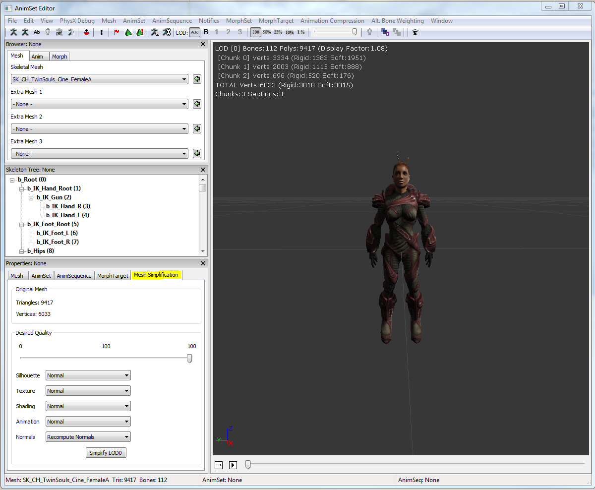
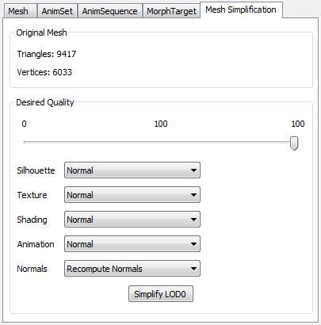
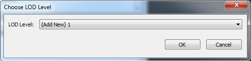
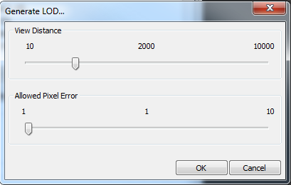

骨架网格物体简化工具
工作原理
骨架网格物体简化工具允许您创建一个原始网格物体的低分辨率版本。网格物体将适当地进行更新，所以随着您调整网格物体的质量级别您可以立即在编辑器的预览窗口看到效果。原始网格物体的数据将会被保存，从而允许您将网格物体调整为您期望的质量级别，不必丢失原始的源网格物体。
另外，这个工具可以用于自动地创建网格物体的细节层次级别(LOD)模型。当在某个距离处缺失细节不再那么显而易见时将会切入到这些LOD模型。因为这些LOD模型具有较少的顶点，并且可能需要较少的骨骼，所以它们可以大大地提高渲染性能。
在简化过程中将会保存骨架，以便所有的动画可以在简化网格物体上继续有效。
注意： 目前，简化的网格物体LOD不支持顶点变形目标和可替换骨骼权重。
请参照网格物体简化工具页面获得关于简化静态网格物体的信息。
启动工具窗口
可以通过打开动画集编辑器来访问这个工具。*Mesh Simplification(网格物体简化)* 选卡和属性窗口放在一起：

简化网格物体
首先，选中从您的LOD菜单或工具条中选择您想简化的LOD：
 选中需要的简化设置并选择 Simplify LOD(简化 LOD) 按钮。动画集编辑器和其他编辑器视口中将会立即更新网格物体。
选中需要的简化设置并选择 Simplify LOD(简化 LOD) 按钮。动画集编辑器和其他编辑器视口中将会立即更新网格物体。

简化设置
Simplification Type(简化类型) 指出了所使用的方法，以决定最终LOD网格物体的质量或复杂度。
| 类型 | 描述 |
| Max Deviation（最大偏离） | 和基础网格物体的最大偏离量，以边界球体的百分比呈现。编辑器使用期望的质量来计算网格物体的错误尺度。这个错误尺度阻止工具简化网格物体，以防止新的网格物体表面和源网格物体的表面偏离太远。这种方法的优点是这个工具可以智能地优化网格物体使它位于源网格物体的某特定偏离量之内，而不必在受到任何三角形限制时而停止。 |
| Number of Triangles(三角形数量) | 编辑器简化网格物体直到它具有指定数量的三角形为止。 |
Silhouette(轮廓). 指出了网格物体的轮廓的重要程度。您可以从 Off（关闭） 、 Lowest（最低级） 、 Low(低级) 、 Normal（一般） 、 High(高级) 和 Highest(最高级) 选项中进行选择。选择较高级别的设置将会使得简化过程更好地保存网格物体的几何体形状，但是将会导致更多的三角形数量。
贴图 指出了贴图密度的重要程度。您可以从 Off（关闭） 、_Lowest（最低级）_ 、 Low(低级) 、 Normal（一般） 、 High(高级) 和 Highest(最高级) 选项中进行选择。选择较高级别的设置将会使得简化过程避免贴图拉伸失真，但是会导致产生更多的三角形数量。
阴影. 指出了阴影质量的重要程度。您可以从 Off（关闭） 、_Lowest（最低级）_ 、 Low(低级) 、 Normal（一般） 、 High(高级) 和 Highest(最高级) 选项中进行选择。选择较高级别的设置将使得简化时保持阴影质量，但是会导致产生更多的三角形数量。
动画 。您可以选择动画的重要程度。您可以从 Off（关闭） 、_Lowest（最低级）_ 、 Low(低级) 、 Normal（一般） 、 High(高级) 和 Highest(最高级) 选项中进行选择。选择较高级别的设置将会使得简化过程避免动画失真，但是会导致产生更多的三角形数量。
Welding Threshold(融合阈值). 顶点间距离在这个值之内的将会自动融合。这可以帮助消除较小的面。使用较大的值将会产生较差的效果。
Recompute Normals(重新计算法线). 如果该项为true，将会基于简化的几何体重新计算平滑组。否则，将会从原始网格物体获得平滑组。
Hard Edge Angle Threshold(尖锐角度阈值). 当重新计算法线时，如果两个面之间的角度大于这个值将会在这两个面之间产生尖锐边缘。较小的角度值将会产生柔和边缘。
Number of Bones(骨骼数量). 和原始网格物体相比，简化后的LOD网格物体中映射到顶点的骨骼的比例。较小的值将会导致更多的骨骼被从映射中删除。
Max Bones Per Vertex(每个顶点的最大骨骼数量). 在简化的LOD网格物体中可以分配给每个顶点的骨骼的最大数量。
当您简化网格物体时，动画集编辑器的左上角将会更新三角形、顶点和块的数量。源网格物体的三角形和顶点数量显示在 Mesh Simplification(网格物体简化) 标签下，以便您可以将它们和简化的网格物体比较。
您可以继续调整质量设置并简化网格物体，直到您获得满意的结果为止。
生成LOD
网格物体简化工具也可以生成LOD。在动画集编辑器中从 Mesh(网格物体) 菜单选择 Generate LOD(生成LOD) 。
首先，将会询问您期望生成的LOD级别：

接下来，将会要求您为生成的LOD选择约束：

选择您想切换到这个LOD时所处的距离，然后选择允许这个LOD从源网格物体偏离多少个像素。最后，点击 OK（确定） 来生成LOD。
当生成LOD时编辑器将会为您计算质量尺度。所允许的像素误差告诉编辑器当网格物体在给定距离处跳动多少个像素时您可以适应。作为示例，如果您设置距离为2000，并且所允许的像素误差是1, 那么当从距离2000个单位处查看源网格物体时所生成的LOD偏离源网格物体的程度小于1个像素。这个计算量是近似值。它对后置缓冲的尺寸(假设为1280x720)和视场(假设90度)做了一些假设。这个近似值作为您开始调整所生成的LOD质量的起始点。
当以这种方式生成LOD时，编辑器将会自动地设置LOD的 Display Factor(显示因数) ，以便当生成该LOD时它可以在您选择的距离处切入进来。
当生成LOD时，您或许想调整它的质量。简单地遵循以下指令来简化网格物体并确保您选择了您生成的LOD。
Simplygon®
 Simplygon用于自动地生成可以在游戏中使用的针对特定像素分辨率的细节层次级别模型(LOD)，通过尽可能多地删除信息来实现，不必针对某特定屏幕尺寸而降低LOD质量。Simplygon使用一个专用的可以保持几何体LOD完整性和LOD切换视觉质量的网格物体简化方法，生成可以直接在顶级游戏中使用的AutoLODs 。
虚幻引擎3对Simplygon进行了一些修改，使得可以不必离开虚幻编辑器就可以产生 高质量的网格物体简化 。开发人员可以快速地简化网格物体、生成LODs，并立即在他们的关卡中看到效果。
Simplygon用于自动地生成可以在游戏中使用的针对特定像素分辨率的细节层次级别模型(LOD)，通过尽可能多地删除信息来实现，不必针对某特定屏幕尺寸而降低LOD质量。Simplygon使用一个专用的可以保持几何体LOD完整性和LOD切换视觉质量的网格物体简化方法，生成可以直接在顶级游戏中使用的AutoLODs 。
虚幻引擎3对Simplygon进行了一些修改，使得可以不必离开虚幻编辑器就可以产生 高质量的网格物体简化 。开发人员可以快速地简化网格物体、生成LODs，并立即在他们的关卡中看到效果。